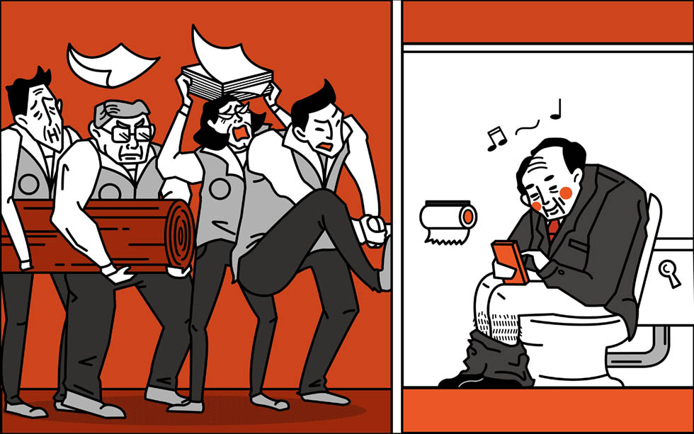

主席不排案的情況通常發生在委員會階段， 立法院有8個「常設委員會」，包括：內政、外交國防、經濟、財政、教育文化、交通、司法法制、社福衛環，各黨團在各委員會席次，依政黨比例分配，「常設委員會」每週一、三、四召開。
法案一讀後就會先送到委員會審查，委員會為主要的法案審查、預算審查、行政對決的會議，設有兩位召委（主席），他們有權決定委員會要討論哪些議案與主持議事進行，沒被拿出來討論的法案便只能躺在委員會乾等。
政黨法：政黨法為處理政黨組織、財務來源、甚至是黨產問題的法案，在2012年內政部提出官方版本後，先後有八個版本出現（像是國民黨版、民進黨版、台聯版等等），但當中牽涉到國民黨黨產如何處置的問題而各方爭論不下，2012年僅在委員會拿出來討論幾次之後就沒被拿出來審議，時隔兩年後，2015年1月，當時朱立倫上任黨主席，那時的內政委員會召委吳育昇才把政黨法排入委員會討論，被民進黨委員批評是審假的，在那次之後到現在就沒再拿出來討論過...。
相關文章：
兩岸協議監督條例：此法案是為了將立法院審查兩岸間的協議法制化，主要是因應318學運之後對於兩岸協議「先立法，後審查」的訴求，目前在內政委員會有八個版本，由於法案涉及「名稱是否涉及主權爭議」、「立法院監督的權限」、「資訊透明程度與公民參與的程度」、「政治協商中的公民保留權利」，民間版本與官方版本在這些議題上意見歧義，所以朝野為了爭取排案權僵持不下，目前仍無法排案審查。
相關文章：
孤．單．之．死 -『法案死於主席不排案』
主席不排案：
主席不排案的情況通常發生在委員會階段， 立法院有8個「常設委員會」，包括：內政、外交國防、經濟、財政、教育文化、交通、司法法制、社福衛環，各黨團在各委員會席次，依政黨比例分配，「常設委員會」每週一、三、四召開。
法案一讀後就會先送到委員會審查，委員會為主要的法案審查、預算審查、行政對決的會議，設有兩位召委（主席），他們有權決定委員會要討論哪些議案與主持議事進行，沒被拿出來討論的法案便只能躺在委員會乾等。
同樣死在這裡的法案：
政黨法：政黨法為處理政黨組織、財務來源、甚至是黨產問題的法案，在2012年內政部提出官方版本後，先後有八個版本出現（像是國民黨版、民進黨版、台聯版等等），但當中牽涉到國民黨黨產如何處置的問題而各方爭論不下，2012年僅在委員會拿出來討論幾次之後就沒被拿出來審議，時隔兩年後，2015年1月，當時朱立倫上任黨主席，那時的內政委員會召委吳育昇才把政黨法排入委員會討論，被民進黨委員批評是審假的，在那次之後到現在就沒再拿出來討論過...。
相關文章：
兩岸協議監督條例：此法案是為了將立法院審查兩岸間的協議法制化，主要是因應318學運之後對於兩岸協議「先立法，後審查」的訴求，目前在內政委員會有八個版本，由於法案涉及「名稱是否涉及主權爭議」、「立法院監督的權限」、「資訊透明程度與公民參與的程度」、「政治協商中的公民保留權利」，民間版本與官方版本在這些議題上意見歧義，所以朝野為了爭取排案權僵持不下，目前仍無法排案審查。
相關文章：
- 貨貿談判中，可是「兩岸協議監督條例」哩？一次搞懂八種版本的爭議
- 【就是現在】關鍵大對談：太寬鬆還是太嚴格 ？「兩岸協議監督條例」官方版與民間版大對決
- 【318一週年專題】太陽花後的今天，為您進行一個「三大法案」追蹤進度的動作
遊戲設計：關鍵評論網、Re-lab
資訊設計：Re-lab
法案整理：關鍵評論網
資訊設計：Re-lab
法案整理：關鍵評論網
SHARE：